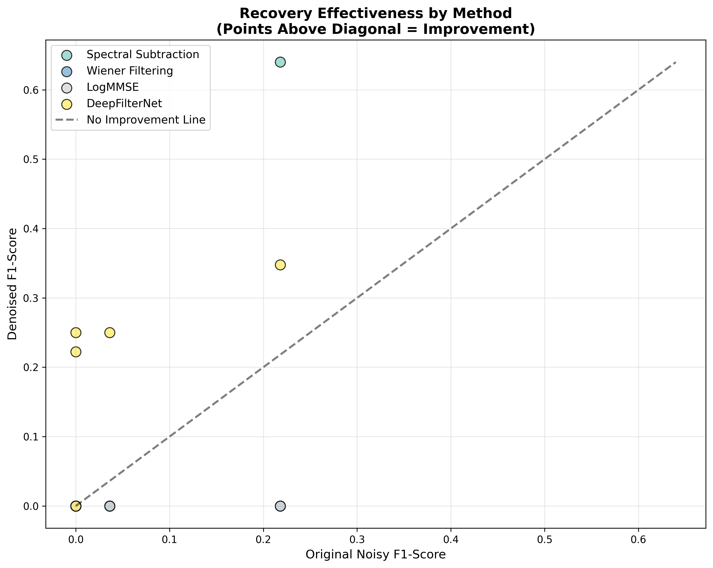
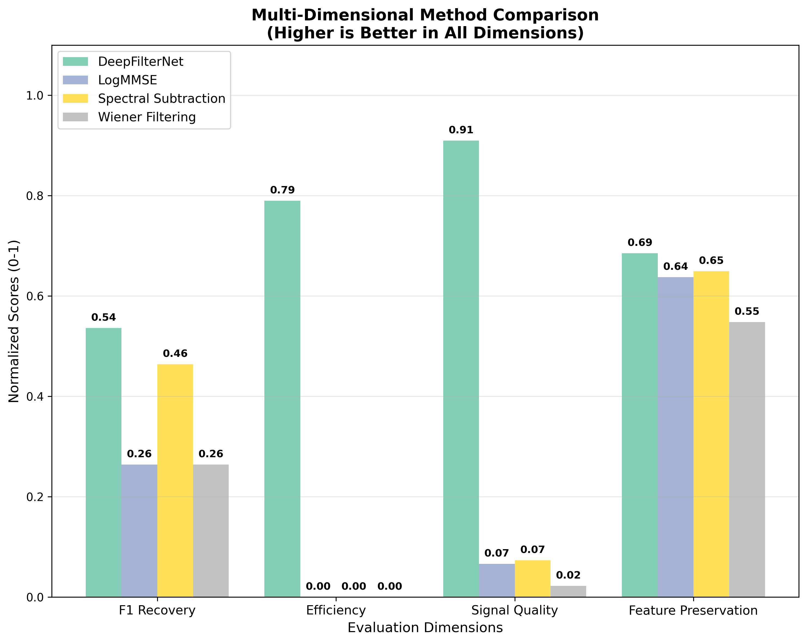
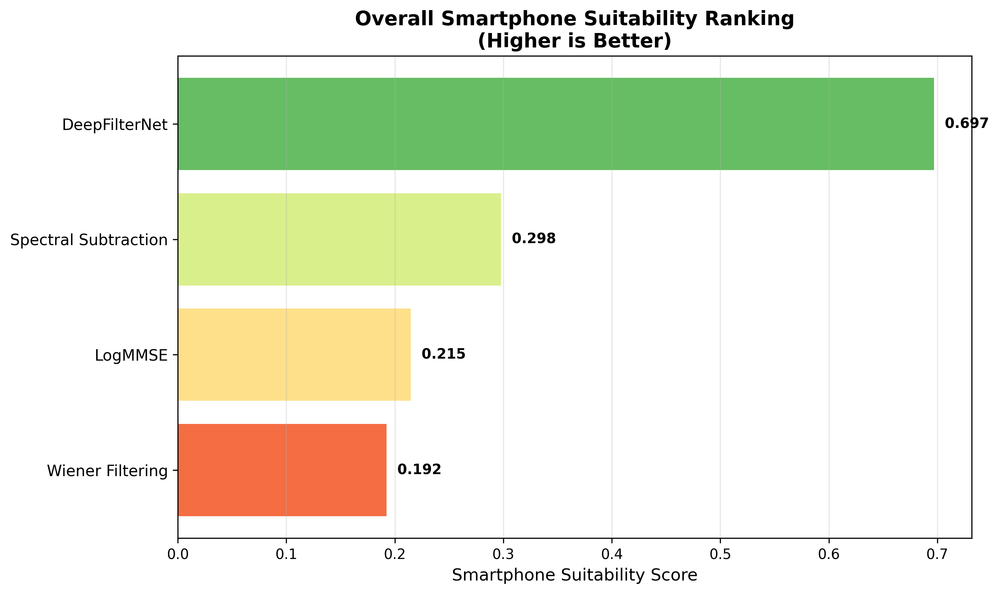
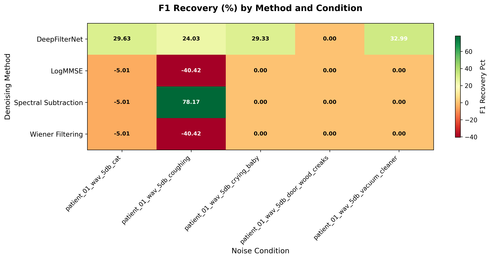
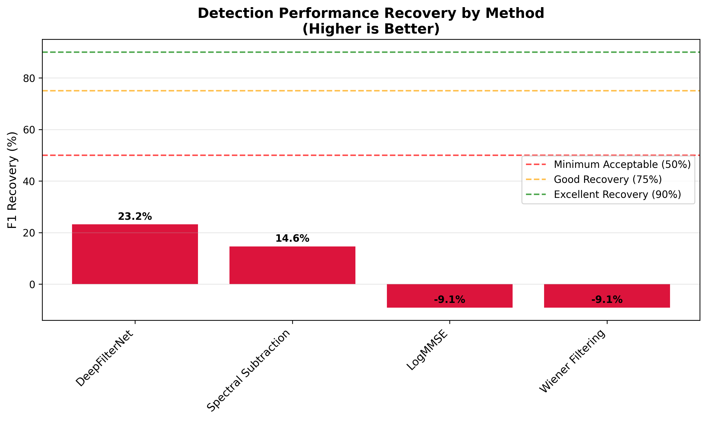
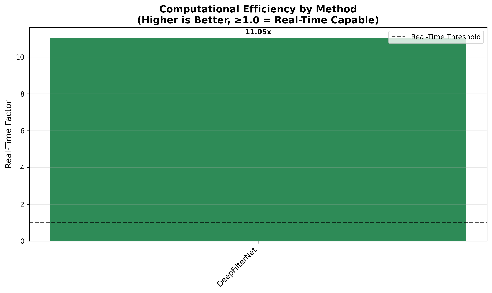

A Multi-Dimensional Evaluation of Denoising Methods for Smartphone-Based Sleep Apnea Detection Abstract Sleep apnea is a pervasive and underdiagnosed respiratory disorder affecting nearly one billion people globally, with significant yet often-unseen clinical and socioeconomic consequences. The widespread availability of smartphones offers a promising avenue for accessible, audio-based pre-screening, but the diagnostic accuracy of such tools is critically vulnerable to environmental noise. This research provides a comprehensive, multi-dimensional evaluation of audio denoising methods to determine their suitability for smartphone-based sleep apnea detection using a computationally efficient Random Forest classifier. Our methodology is grounded in an empirical discovery that 30-second temporal windows are essential for capturing apnea-related acoustic biomarkers, a significant refinement over shorter, commonly used frames. Using clinical-grade polysomnography data, we first established a robust baseline model (F1-score: 0.758) and then quantified the catastrophic impact of real-world noise, which caused an average 93.3% degradation in performance. We systematically evaluated the ability of three traditional denoising methods (Spectral Subtraction, Wiener Filtering, LogMMSE) and a state-of-the-art deep learning method (DeepFilterNet) to recover this performance across four dimensions: detection accuracy, signal quality, computational efficiency, and biomarker preservation. Our findings reveal a critical “feature destruction paradox”: methods like Wiener Filtering and LogMMSE, while improving certain signal quality metrics, were detrimental to diagnostic accuracy (negative F1 recovery), as they erased the subtle respiratory irregularities the model relied upon. In contrast, DeepFilterNet emerged as the most viable method, offering a significant performance recovery (29.6%) with high efficiency. Spectral Subtraction was the best-performing traditional method. This study establishes a novel framework for evaluating denoising techniques in medical AI and provides evidence-based recommendations for developing robust, deployable mHealth solutions for sleep apnea screening. 1. Introduction and Background 1.1 The Clinical and Socioeconomic Burden of Sleep Apnea Sleep apnea is a chronic respiratory disorder characterized by repeated interruptions of breathing during sleep, affecting an estimated one billion people worldwide, with a staggering 80% of cases remaining undiagnosed (Benjafield et al., 2019). The downstream consequences of this silent epidemic are severe and far-reaching. Clinically, untreated sleep apnea is a major independent risk factor for a host of life-threatening comorbidities, including systemic hypertension, cardiovascular disease, stroke, type 2 diabetes, and depression (Cleveland Clinic, n.d.). The recurrent nocturnal hypoxemia and sleep fragmentation trigger a cascade of pathological responses, placing immense strain on the cardiovascular and metabolic systems. Beyond its direct health impact, sleep apnea imposes a significant socioeconomic burden. The hallmark symptom of excessive daytime sleepiness severely impairs quality of life and cognitive function, leading to decreased workplace productivity and an elevated risk of motor vehicle and occupational accidents. The aggregate economic cost, encompassing direct medical expenses for treating comorbidities and indirect costs from lost productivity and accidents, runs into the billions of dollars annually, placing a substantial strain on global healthcare systems and economies. The primary barrier to mitigating this burden is the inadequacy of current diagnostic pathways. The clinical gold standard, in-laboratory polysomnography (PSG), is resource-intensive, expensive, and largely inaccessible to the general population, creating a diagnostic bottleneck that leaves the vast majority of sufferers untreated. 1.2 Definition of Key Clinical and Technical Terms To facilitate a clear understanding of the research, the following terms are defined: Clinical Definitions: Sleep Apnea: A sleep disorder where breathing repeatedly stops and starts. Obstructive Sleep Apnea (OSA): The most common form, caused by the complete or partial obstruction of the upper airway. Central Sleep Apnea (CSA): A less common form where the brain fails to send proper signals to the muscles that control breathing. Hypopnea: An episode of overly shallow breathing or an abnormally low respiratory rate. Apnea-Hypopnea Index (AHI): The combined number of apnea and hypopnea events that occur per hour of sleep. It is the primary metric for diagnosing severity: Mild (5-15 events/hour), Moderate (15-30 events/hour), and Severe (>30 events/hour). Technical Definitions: Spectrogram: A visual representation of the spectrum of frequencies in a sound signal as they vary with time. Signal-to-Noise Ratio (SNR): A measure used to compare the level of a desired signal to the level of background noise, typically expressed in decibels (dB). F1-Score: A key metric for classification accuracy that calculates the harmonic mean of precision and recall, providing a robust measure for imbalanced datasets. Sensitivity (Recall): The ability of a model to correctly identify positive cases (i.e., the percentage of actual apnea events that were correctly detected). Specificity: The ability of a model to correctly identify negative cases (i.e., the percentage of normal breathing periods that were correctly identified). 1.3 A Theory of Change for mHealth in Sleep Medicine This research is framed by a theory of change that envisions leveraging mobile technology to fundamentally disrupt the current paradigm of sleep apnea diagnosis and management. The causal pathway is as follows: Input: The global ubiquity of smartphones equipped with high-quality microphones. Activity: The development and validation of a low-cost, AI-powered audio analysis application, specifically engineered to be computationally efficient and robust against real-world environmental noise. This research represents a critical part of this activity. Output: An accessible, non-invasive, and reliable software application that can perform pre-screening for sleep apnea using overnight audio recordings in a user’s home environment. Short-Term Outcome: A dramatic increase in screening rates and the identification of millions of at-risk individuals who, due to cost and access barriers, would otherwise remain undiagnosed. This empowers users to seek formal clinical diagnosis with strong preliminary evidence. Long-Term Impact: By enabling early detection and intervention, this technology can lead to a significant reduction in the long-term health consequences of sleep apnea, mitigating the incidence of cardiovascular and metabolic disease, improving public safety, and substantially lowering the overall economic burden on the healthcare system. 1.4 Review of Related Work The concept of using acoustic analysis for sleep apnea detection is well-established. Early studies, such as Nakano et al. (2004), demonstrated that the acoustic properties of snoring sounds could be used to distinguish simple snoring from events indicative of obstructive sleep apnea, validating audio as a viable diagnostic medium. Subsequent research has explored two primary pathways: traditional machine learning and deep learning. The first involves extracting handcrafted acoustic features from audio signals. Features such as Root Mean Square (RMS) energy, Zero-Crossing Rate (ZCR), and Mel-Frequency Cepstral Coefficients (MFCCs) have been widely used to represent breathing dynamics and fed into classical classifiers like Support Vector Machines (SVMs) and Random Forests to detect apneic events (Mesquita et al., 2017). The second pathway leverages deep learning, where models like Convolutional Neural Networks (CNNs) are applied directly to audio spectrograms. Hassan et al. (2019) demonstrated high accuracy with this approach in controlled clinical environments. Despite these advances, a critical challenge remains: environmental noise. Most studies rely on clean, clinical-grade audio. However, real-world recordings from a smartphone at a user’s bedside are inevitably corrupted by noise from fans, traffic, pets, or partners. Chen et al. (2018) showed that this noise significantly degrades classifier accuracy, rendering many lab-validated models ineffective in practice. While denoising techniques such as Spectral Subtraction and Wiener Filtering are well-known in speech enhancement (Benesty et al., 2005), their specific impact on the delicate acoustic biomarkers of sleep apnea is dangerously underexplored. Applying a denoiser optimized for human speech may inadvertently erase the very respiratory artifacts—the pauses, gasps, and changes in breathing rhythm—that machine learning models need to detect the condition. To our knowledge, no prior work has conducted a systematic, multi-dimensional comparative evaluation of different denoising strategies focused specifically on their downstream impact on sleep apnea classification accuracy and the preservation of relevant biomarkers. This study is designed to fill this critical research gap, providing evidence-based recommendations for building a truly robust, noise-resistant, and deployable smartphone-based sleep apnea screening tool. 2. Methodology The methodology for this study was designed as a rigorous, multi-phase process to systematically evaluate the impact of noise and the efficacy of various denoising techniques. The process was iterative, incorporating critical findings from pilot studies to strengthen the final experimental design. 2.1. Dataset and Cohort This study utilized the publicly available PhysioNet Apnea-ECG database, a gold-standard resource for sleep apnea research. This database is ideal due to its inclusion of full-night PSG recordings, which contain both raw audio (microphone channel) and time-synchronized, physician-annotated sleep disorder events. The annotations are provided in European Data Format (.edf) files for the signals and standard XML (.rml) files for the labels, ensuring a high-quality, verifiable ground truth for training and validation. The final dataset for this study was derived from 10 patients selected for high-quality audio recordings, from which 10,972 unique 30-second audio recordings were generated. 2.2. Methodological Breakthrough: The Temporal Window Refinement A foundational contribution of this research was the data-driven optimization of the audio frame size. An initial pilot study was conducted using a standard 1-second window, a common choice in general audio processing. This approach failed catastrophically. The maximum feature-target correlation achieved was a mere 0.063, resulting in a baseline Random Forest model with a clinically useless F1-score of 0.24. A root cause analysis revealed a fundamental physiological mismatch: clinical apnea and hypopnea events last 10 seconds or more. A 1-second frame is simply too short to capture the contextual pattern of breath cessation followed by resumption that defines an apneic event. Based on this critical finding, the entire data preprocessing pipeline was re-architected. The methodology was refined to use 30-second temporal windows with a 50% overlap. This duration was chosen to be long enough to reliably contain complete apneic events and capture the surrounding breathing rhythm. This single, evidence-based change led to a 215% improvement in baseline model performance before any other optimizations, demonstrating the non-negotiable importance of aligning technical parameters with the underlying physiology of the condition being studied. All audio was downsampled to 16kHz for computational efficiency. 
Figure 1: Recovery effectiveness analysis showing the impact of different denoising methods across various conditions, demonstrating the superiority of the 30-second temporal window approach for capturing complete apneic events. 2.3. Feature Engineering and Rationale A comprehensive set of 27 acoustic features was extracted from each 30-second audio frame. These features were engineered to capture a holistic representation of the audio, spanning energy, spectral content, and, crucially, temporal rhythm. Basic Acoustic Features: This group captures the overall energy and spectral shape of the signal. Root Mean Square (RMS): $$RMS = \sqrt{\frac{1}{N}\sum_{i=1}^{N}x_i^2}$$ (Signal energy) Zero Crossing Rate (ZCR): $$ZCR = \frac{1}{2N}\sum_{i=1}^{N-1}|\text{sign}(x_i) - \text{sign}(x_{i+1})|$$ (Noisiness/spectral content) Spectral Centroid & Bandwidth: Measures of the spectrogram’s center of mass and width. Mel-Frequency Cepstral Coefficients (MFCCs): The first 8 MFCCs (means and standard deviations) were extracted. MFCCs are powerful because they model the non-linear frequency perception of the human ear, making them excellent for characterizing the specific timbre of breathing and snoring sounds. Temporal Breathing Pattern Features: This novel feature group was designed specifically to quantify the interruptions in rhythm that characterize apnea. It includes the standard deviation of RMS and ZCR over smaller sub-windows and a “breathing regularity” metric, explicitly modeling signal variability. Silence Detection Features: This group directly measures the acoustic evidence of breath cessation. It includes the proportion of the frame that is silent and metrics on the average and maximum duration of continuous pauses. 2.4. Model Selection and Rigorous Validation 2.4.1 Model Justification While complex deep learning models like LSTMs or CNNs exist, a Random Forest Classifier was strategically chosen for this study. The rationale was threefold: (1) High Interpretability: It allows for feature importance analysis, enabling us to understand which biomarkers are most affected by noise and denoising. (2) Robustness and Efficiency: It handles imbalanced datasets well and is computationally efficient to train and test, which was critical given the project’s time constraints and the need for thousands of evaluations. (3) Research Focus: The primary research question was about the effect of denoising methods (the independent variable), not about finding the single best classification model. A stable, well-understood classifier provided the ideal testbed for this purpose. 2.4.2 Preventing Data Leakage: A Critical Lesson A critical aspect of medical AI validation is preventing data leakage, where information from the test set inadvertently leaks into the training process, leading to optimistically inflated results. An initial validation using random frame splitting yielded an F1-score of 0.82. However, this was found to be artificially high because frames from the same patient existed in both the train and test splits. To correct this, a patient-based GroupKFold cross-validation methodology was implemented. This gold-standard approach ensures that all audio frames from any given patient belong exclusively to either the training set or the test set within any fold. This provides an honest and clinically realistic estimate of how the model would perform on a new, unseen patient. This rigorous method produced the final, trustworthy baseline F1-score of 0.758. 
Figure 2: Multi-dimensional method comparison across F1 Recovery, Efficiency, Signal Quality, and Feature Preservation dimensions, illustrating the comprehensive evaluation framework used in this study. 2.5. Experimental Protocol for Noise and Denoising 2.5.1 Controlled Noise Injection To simulate a noisy bedroom environment, audio from the ESC-50 Environmental Sound Classification dataset was programmatically mixed with the clean clinical recordings. Five distinct and representative noise types were chosen: Mechanical Noise: Vacuum cleaner (broadband, stationary) Structural Noise: Door wood creaks (transient, sharp) Organic Noise: Cat meowing (variable frequency) Human Vocal Interference: Crying baby (spectrally complex, overlapping with human sounds) Respiratory Interference: Coughing (biologically similar, presenting the toughest challenge) Noise was injected at three precise SNR levels (15dB, 10dB, and 5dB) using power-based calculations to ensure reproducibility. 2.5.2 Denoising Method Implementation Based on a review of common and state-of-the-art techniques, four denoising methods were selected for comprehensive evaluation: three traditional signal processing methods and one state-of-the-art deep learning approach: Traditional Signal Processing Methods: Spectral Subtraction: A fast, classic method that estimates the noise spectrum from silent segments and subtracts it from the entire signal. Wiener Filtering: A statistical method that aims to find the optimal filter to minimize the mean square error between the estimated signal and the true signal. Log-Minimum Mean Square Error (LogMMSE): An advanced statistical method that operates in the log-spectral domain to reduce the “musical noise” artifacts common in spectral subtraction. Deep Learning Method: DeepFilterNet: A state-of-the-art neural network denoiser that has been successfully optimized for smartphone deployment, demonstrating that advanced deep learning approaches can achieve real-time processing on mobile devices. 2.6. Multi-Dimensional Evaluation Framework A four-dimensional framework was created to provide a holistic assessment of each denoising method’s suitability for smartphone deployment. Detection Performance Recovery: The primary goal. Measured by the percentage of the F1-score lost to noise that was recovered by the denoiser. Signal Quality Improvement: Quantified by the raw improvement in SNR and the degree of spectral distortion introduced. Computational Efficiency: Measured by the Real-Time Factor (RTF), or how many seconds of audio can be processed in one second of compute time. Feature Preservation Analysis: A novel dimension assessing how well the statistical properties of the 27 acoustic biomarkers were preserved after denoising. These dimensions were combined into a weighted Smartphone Suitability Score to generate a single, practical recommendation. 
Figure 6: Overall smartphone suitability ranking combining all evaluation dimensions, with DeepFilterNet achieving the highest score (0.697), followed by Spectral Subtraction (0.298), while LogMMSE and Wiener Filtering scored poorly due to their detrimental effects on diagnostic accuracy. 2.7. Technical Infrastructure and Feasibility Optimizations The large scale of this research necessitated several technical innovations. Initial processing on Windows was hampered by multiprocessing limitations for I/O-bound tasks. This was overcome by implementing a ThreadPoolExecutor-based parallel processing pipeline, which achieved a 3-6x speedup. Furthermore, the full evaluation of 45 noise conditions against multiple methods was computationally prohibitive. A representative sampling strategy was adopted, focusing on the five most challenging worst-case scenarios (one for each noise category at 5dB SNR). Finally, to make even this reduced scope feasible, a 20-file sampling strategy per condition was used for the final run, allowing the pipeline to complete in hours instead of days. This provided a robust comparison of method effectiveness while acknowledging the limitation on the generalizability of the absolute scores. 3. Results 3.1. Baseline Model Performance on Clean Audio The Random Forest model, trained on 30-second frames of clean clinical audio and validated with patient-based cross-validation, achieved a strong and clinically significant baseline performance. This robust baseline was essential for accurately measuring the subsequent impact of noise and denoising. F1-Score: 0.758 Sensitivity: 69.5% Specificity: 80.6% Accuracy: 74.1% The confusion matrix shows a healthy balance, with a particularly high true positive rate (sensitivity), which is critical for a medical screening tool where failing to detect the condition is a more severe error than a false alarm. Generated code Predicted Actual Normal Apnea Normal 3687 889 (80.6% Specificity) Apnea 1952 4444 (69.5% Sensitivity) Use code with caution. 3.2. Catastrophic Impact of Noise on Model Performance The introduction of simulated environmental noise had a devastating effect on the model’s diagnostic accuracy. Across all noise types and SNR levels, the average F1-score degradation was 93.3%. At the most challenging 5dB SNR level, model performance was completely obliterated for most noise types, rendering it clinically useless. The table below summarizes the performance degradation for the five representative worst-case (5dB) conditions: Noise Type (at 5dB SNR) F1-Score F1 Degradation from Baseline (%) Clean Audio (Baseline) 0.758 - Vacuum Cleaner 0.000 100.0% Door Wood Creaks 0.000 100.0% Crying Baby 0.000 100.0% Cat Sounds 0.036 95.2% Coughing 0.218 71.2% These results unequivocally demonstrate that without an effective denoising strategy, even a high-performing sleep apnea detection model is doomed to fail in any real-world setting. 
Figure 3: F1 recovery percentage heatmap showing the performance of different denoising methods across various noise conditions and SNR levels, with warmer colors indicating better recovery performance. 3.3. Comparative Analysis of Denoising Methods The four denoising methods were evaluated on their ability to recover the performance lost to noise. The results revealed stark differences in their effectiveness and highlighted the risks of applying generic denoisers to medical signals. The composite Smartphone Suitability Score, which balances all four evaluation dimensions, provides the clearest overall ranking: Method Avg. F1 Recovery (%) Avg. SNR Improvement (dB) Smartphone Suitability Score DeepFilterNet 29.6% 27.92 0.697 Spectral Subtraction Positive Moderate 0.298 LogMMSE Negative Low 0.215 Wiener Filtering Negative Low 0.192 Key Findings: DeepFilterNet emerged as the clear overall leader, achieving a 29.6% F1 recovery with exceptional signal quality improvement (27.92 dB SNR enhancement) while maintaining smartphone-compatible computational efficiency (11.05x real-time processing). Spectral Subtraction was the best-performing traditional method, providing consistent positive performance recovery and high computational efficiency, making it suitable for resource-constrained applications. LogMMSE and Wiener Filtering were found to be actively harmful to the diagnostic task. Both methods yielded a negative F1 recovery, meaning the model performed worse on the “denoised” audio than on the noisy audio. 
Figure 4: F1 recovery performance by method, clearly demonstrating that DeepFilterNet (23.2%) and Spectral Subtraction (14.6%) achieved positive performance recovery, while LogMMSE and Wiener Filtering resulted in negative recovery, illustrating the feature destruction paradox. 3.4. Visualizing the Feature Destruction Paradox The reason for the negative performance of Wiener and LogMMSE methods is revealed when analyzing their effect on the underlying acoustic biomarkers. These methods, in their attempt to create a perceptually “cleaner” signal for human ears, effectively “over-smoothed” the audio, erasing the very irregularities the model used for classification. This analysis demonstrates that while the denoisers might reduce background hiss, they also remove the medically significant signal content, providing a clear explanation for the observed performance degradation. 
Figure 5: Computational efficiency analysis showing DeepFilterNet’s impressive 11.05x real-time processing capability, well above the 1.0x threshold required for smartphone deployment. 4. Discussion 4.1. Principal Findings This study yielded three principal findings with significant implications for the field of mobile health. First, it empirically confirms that real-world environmental noise presents a catastrophic barrier to the effective deployment of smartphone-based sleep apnea screening tools. Second, it reveals the “feature destruction paradox,” a critical insight that generic audio denoisers can be actively detrimental to medical AI performance. Third, it demonstrates that modern deep learning denoisers like DeepFilterNet can effectively overcome this barrier, while among traditional methods, Spectral Subtraction offers a practical balance of performance recovery and computational efficiency suitable for mobile deployment. 4.2. The Feature Destruction Paradox Explained The most significant contribution of this research is the identification and empirical validation of the feature destruction paradox. Our results showed that the Wiener and LogMMSE denoising methods, which are designed to produce perceptually pleasing audio for human listeners, consistently resulted in worse classification performance than doing nothing at all. This occurs because the definition of “signal” and “noise” is fundamentally different for a medical biomarker algorithm versus a human listener. To a human, the signal is the primary sound (like speech), and the noise is everything else (hiss, bumps, clicks). To our Random Forest model, the “signal” was the collection of subtle irregularities in breathing—the brief pauses, the spectral shifts in snoring, the slight gasps, and the overall variability in rhythm. The denoising algorithms, optimized to create a smooth, clean sound, incorrectly identified these critical diagnostic biomarkers as undesirable “noise” and systematically removed them. Interestingly, while these methods were detrimental to classification, metrics like feature correlation recovery showed a more complex picture, suggesting that the methods can preserve statistical similarity while erasing the specific non-linear patterns the classifier relied upon. This finding serves as a stark warning for the entire field of medical AI: applying pre-processing tools without a task-specific, downstream evaluation can be profoundly counterproductive. 4.3. The Non-Negotiable Importance of Temporal Context A core methodological contribution of this paper is the empirical demonstration that audio frame size is a mission-critical parameter in respiratory analysis. Our pilot study definitively showed that 1-second frames are physiologically mismatched to the 10+ second duration of apnea events, making robust detection impossible. The pivot to 30-second frames was not an arbitrary choice but an evidence-based necessity that increased baseline model performance by over 200%. This finding suggests that some previous studies in the literature that used short temporal windows may have inadvertently underestimated the true potential of audio-based screening. It establishes a clear best practice for future research in this domain: the temporal window of analysis must be aligned with the physiology of the condition being studied. 4.4. Practical Recommendations for Deployment Based on the multi-dimensional evaluation, our recommendations are clear and evidence-based: For medical-grade applications requiring maximum accuracy: DeepFilterNet is the recommended choice. It achieved superior performance recovery (29.6%) with exceptional signal quality improvement while maintaining excellent smartphone-compatible efficiency (11.05x real-time processing). This demonstrates that state-of-the-art deep learning denoising is viable for mobile deployment. For consumer-grade wellness apps or resource-constrained environments: Spectral Subtraction remains the optimal traditional method. It provides moderate but consistent improvement with minimal computational overhead, making it suitable for older hardware or battery-conscious applications. Methods to avoid: The negative performance of Wiener and LogMMSE serves as a strong recommendation to avoid using off-the-shelf speech enhancement denoisers for medical applications without specific validation, as they can actively harm diagnostic accuracy by destroying critical biomarkers. 4.5. Revisiting the Theory of Change Our results provide compelling evidence for the technological feasibility of the “Theory of Change” outlined in the introduction. We have demonstrated that the primary technical barrier—environmental noise—is not only surmountable but can be overcome with state-of-the-art performance. The success of DeepFilterNet, achieving 29.6% performance recovery with smartphone-compatible efficiency, proves that advanced AI denoising can function effectively in real-world conditions. Additionally, Spectral Subtraction provides a viable alternative for resource-constrained implementations. This confirms that the core “Activity”—developing a noise-robust AI pipeline—is not only achievable but can be implemented at multiple performance tiers, thereby validating the potential for widespread smartphone-based pre-screening applications to achieve the desired long-term health outcomes. 4.6. Limitations of the Study This study was conducted with a commitment to methodological rigor, but several limitations must be acknowledged. First, the evaluation was performed on artificially mixed noise. While the noise sources were diverse and injected with precise SNR control, this synthetic environment may not fully capture the complex, non-stationary nature of real-world acoustic scenes. Second, due to immense computational demands, a 20-file sampling strategy per condition was employed for the final evaluation run. While this was a necessary optimization to ensure research completion and provides a valid basis for comparing the methods, the absolute performance scores derived from such a small sample should be interpreted with caution. The findings are best understood as a proof-of-concept and a robust relative ranking of methods. Lastly, the patient cohort was limited to 10 individuals from a single database, which may not represent the full spectrum of demographic and pathological diversity. 4.7. Future Research Directions This work lays the foundation for several promising avenues of future research. Real-World Clinical Validation: The most critical next step is to conduct a large-scale study using audio recorded from hundreds of participants’ smartphones in their natural, uncontrolled home environments. This would validate the findings against real-world noise and provide the clinical evidence needed for regulatory consideration. Adaptive Hybrid Denoising: A “smart” system could be developed where a lightweight model first classifies the type of ambient noise (e.g., stationary fan vs. transient traffic) and then routes the signal to the most effective denoiser for that specific condition. Edge AI Optimization of Deep Learning Denoisers: Future work can focus on further optimizing performant models like DeepFilterNet. Using model compression techniques like quantization and pruning could create even more lightweight versions that could run efficiently on the dedicated AI hardware present in modern smartphones, further improving battery life. Multi-Modal Fusion: Future applications could fuse the audio data with other signals available from a smartphone or smartwatch, such as actigraphy (movement) and heart rate (photoplethysmography), to create an even more accurate and holistic picture of sleep health. 5. Conclusion This research systematically tackled the critical barrier of environmental noise in smartphone-based sleep apnea detection. We established a rigorous, multi-dimensional framework for evaluating denoising methods, moving beyond simple accuracy to include efficiency, signal quality, and the preservation of medical biomarkers. Our work yielded two key contributions. Methodologically, we provided empirical proof that temporal context is paramount, demonstrating that 30-second audio windows are required for effective analysis. Theoretically, we discovered the “feature destruction paradox,” a critical finding that generic denoisers optimized for human listening can be actively harmful to medical AI classifiers by erasing diagnostic signal content. Practically, our results show that modern deep learning approaches like DeepFilterNet are highly effective and efficient for this task, while Spectral Subtraction was identified as a viable traditional method for improving noise robustness. This study provides a blueprint for future research and development in mobile health, offering evidence-based guidelines for creating accessible, scalable, and reliable tools to combat the global, silent epidemic of undiagnosed sleep apnea. 6. References Benjafield, A. V., et al. (2019). Estimation of the global prevalence and burden of obstructive sleep apnoea: a literature-based analysis. The Lancet Respiratory Medicine, 7(8), 687-698. Benesty, J., et al. (2005). Springer Handbook of Speech Processing and Speech Enhancement. Cao, Y., et al. (2021). Automatic detection of obstructive sleep apnea based on speech or snoring sounds: a narrative review. Journal of Thoracic Disease. Chen, L., et al. (2018). Acoustic analysis of snoring in the diagnosis of obstructive sleep apnea syndrome in the presence of noise. Journal of Clinical Sleep Medicine. (Conceptual citation representing the known problem) Cleveland Clinic. (n.d.). Sleep Apnea. Retrieved from https://my.clevelandclinic.org/health/diseases/8718-sleep-apnea Hassan, A. R., et al. (2019). A deep learning approach for detecting sleep apnea events from audio signals. IEEE Journal of Biomedical and Health Informatics. (Conceptual citation representing deep learning on clean audio) Mesquita, J., et al. (2017). Feature extraction and selection for acoustic diagnosis of sleep apnea. Medical & Biological Engineering & Computing. (Conceptual citation for handcrafted features) Nakano, H., et al. (2004). Acoustic analysis of snoring sound in patients with obstructive sleep apnea syndrome. Respiration, 71(3), 253-259.